TeHsin (Derek) Chen
DevOps Engineer
Building automation to improve efficiency, lower operational burdens, and design reliable infrastructure strategies.
Infrastructure & Reliability: The Challenge
- Security Mandate: Adherence to strict security standards, including ISO 27001, 22301, and SOC2 Type 2 certifications.
- The Goal: Provision the entire platform to support a robust failover plan.
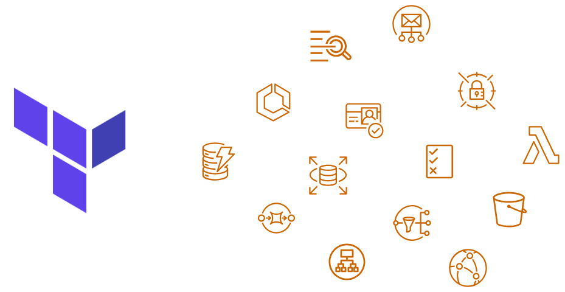
Infrastructure & Reliability: The Architecture
- All AWS resources must be managed by Terraform.
- Required a design that supports rapid deployment across every environment.
- Implementation: Adhered to the Single Source of Truth principle.
- Engineered Terraform scripts utilizing a Helm-chart (template) design for dynamic, reliable resource creation.
Infrastructure & Reliability: The Impact
- The architecture and pipelines successfully passed rigorous QA testing.
- Currently active and in-use in multiple environments.
- Scale: Successfully managing 500+ AWS resources seamlessly via Terraform state.
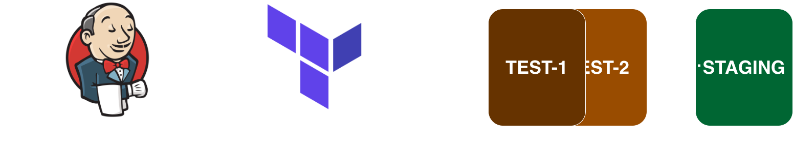
Pipeline Optimization: Deployment Velocity
- Responsible for high-frequency deployment lifecycles.
- Averaging 5 to 10 deployments per week.
- Maintaining pipeline reliability under this volume is critical to the business.
Pipeline Optimization: Redesign
- Executed a redesign of Jenkins jobs to enhance safety and execution speed.
- Implemented parameter autofill to reduce human error.
- Utilized parallel execution stages to maximize resource efficiency.
Pipeline Optimization: Cost & Time Impact
- Successfully delivered a massive volume of deployments punctually.
- Speed: Reduced pipeline execution time by ~30%.
- Automation: Integrated Terraform with Jenkins CronJobs to automatically stop/remove targeted resources nightly.
- Cost Savings: Achieved up to a 50% cost reduction in test environments.
Driving Value: The Communication Bottleneck
- JIRA accounts are limited to the technical team due to licensing.
- Growing demand from the Business Development team to report issues.
- The Problem: The "middle-man" is overwhelmed by manually forwarding tickets.
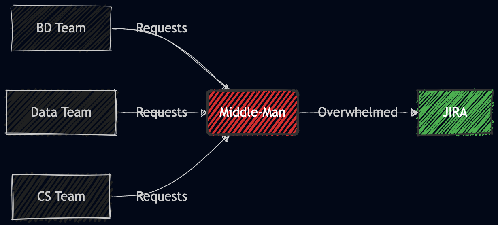
Driving Value: Microsoft Teams ChatOps
- Designed an integration utilizing Microsoft Teams as API middleware to JIRA.
- Developed and deployed a custom Teams application (Bot) within two weeks.
- Infrastructure: Fully managed by Terraform on Azure.
- Cost Efficiency: Consumes only one new JIRA service account, circumventing the need to license the entire BD team.
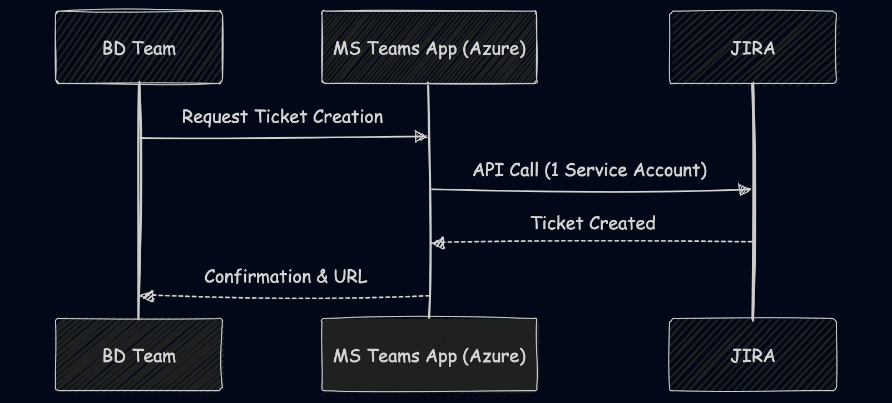
Driving Value: Company-Wide Adoption
- Dramatically lowered communication costs and friction between departments.
- Saved organizational licensing costs.
- Culture Shift: Attracted attention from other departments, leading to new proposals for applying automation company-wide.
Automated MLOps Pipeline: Architecture
- Assigned to deliver an AI product, bridging DevOps with my Machine Learning background.
- Architected an MLflow platform hosted on AWS SageMaker.
- Automation: Configured lifecycles and Terraform to enable 1-click provisioning of ready-to-use SageMaker notebooks.
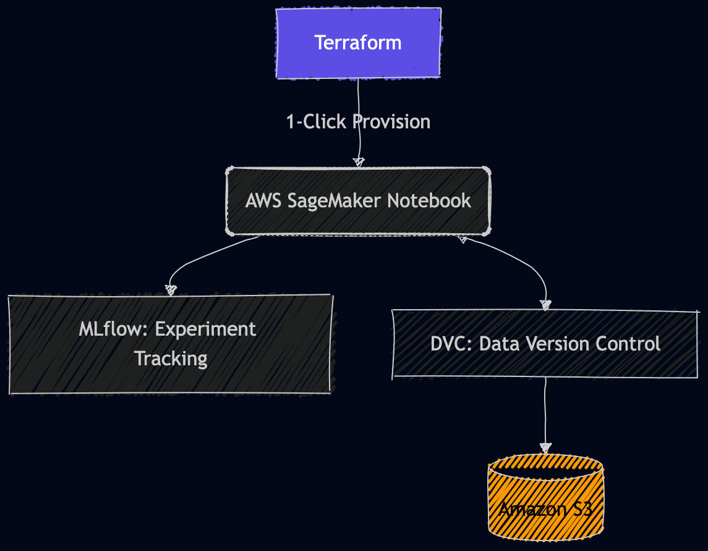
Automated MLOps Pipeline: Collaboration
- Data Strategy: Controlled via DVC and stored in S3.
- Impact: Enabled seamless collaboration and cost-savings by allowing local development with an easy transition to cloud training.
- Streamlined experiment tracking ensures reproducibility across the data team.
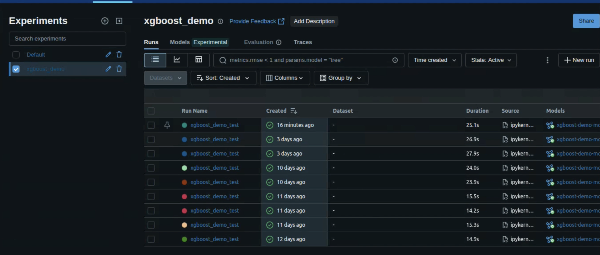
GitLab CI: Pipeline Efficiency
- The Goal: Deliver faster feedback to developers, reduce time-to-market for new features, and improve solution reliability.
- Refactored the CI pipeline from a rigid sequential sequence to a Directed Acyclic Graph (DAG).
- Implemented aggressive parallelism and targeted artifacts.
- Result: Sped up the entire CI process by nearly 50%.
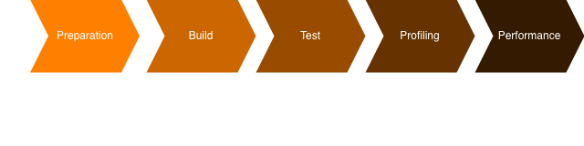
GitLab CI: Solution Insights
- In the final pipeline stage, all artifacts are compiled into a report.
- Key Metrics Tracked:
- Database Composition
- Resource Profiling (RAM/ROM/DMIPs)
- Overall Accuracy Trends
- Impact: Empowers supervisors to visually track improvements over time.
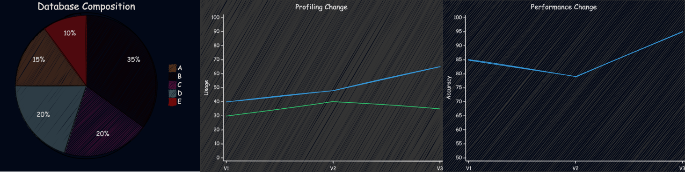
Expanding the Cloud-Native Stack
Architecting full-stack solutions with Kubernetes, Helm, ArgoCD, and the ELK Stack to push the boundaries of modern infrastructure.
GitOps Workflow: The Motivation
- Personal Pain Point: Struggling to estimate connecting flight times.
- The Idea: Build a platform providing statistical flight delay results across different airports.
- Technical Goal: Utilize historical data for better decision-making while gaining hands-on experience with Kubernetes, ArgoCD, and ELK.
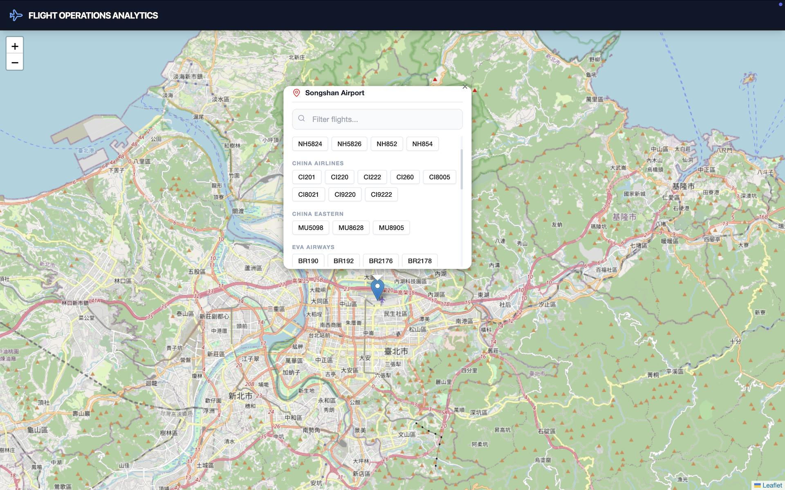
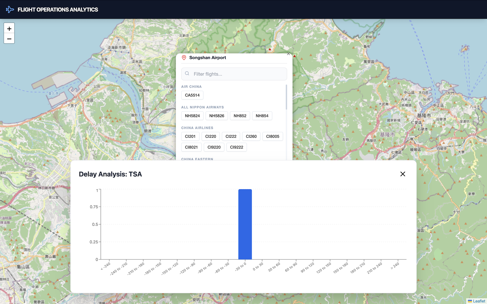
GitOps Workflow: Provisioning
- Infrastructure is 100% Terraform-managed to keep costs optimized.
- Utilized Packer to build a Golden AMI for GitHub runners and services.
- Bootstrap: EC2 User Data automatically registers the GitHub repository with ArgoCD on boot.
- ArgoCD takes full control, pulling Kustomize manifests and continually reconciling the K3s cluster state.
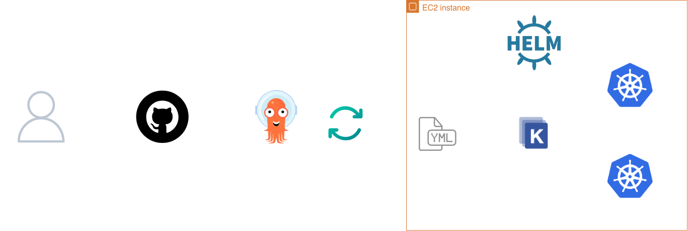

GitOps Workflow: K3s Cluster
- Traffic ingresses through a single AWS public IP.
- Traefik Ingress Controller routes traffic by path:
/api→ FastAPI Backend/argocd→ ArgoCD Dashboard/kibana→ ELK Dashboard/→ React Frontend
- K8s CronJob crawls flight data every 30 minutes, writing to a MySQL StatefulSet.
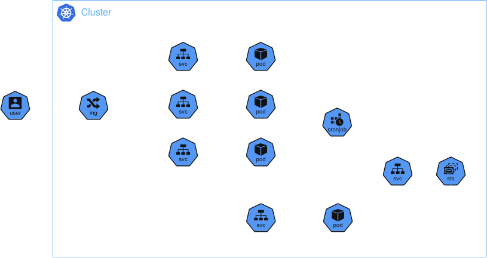
GitOps Workflow: Observability
- Centralized logging implementation using the ELK Stack.
- Aggregated logs across all microservices (Frontend, Backend, Crawler, DB).
- Provides real-time visibility in the dashboard.


Performance Testing & Auto Scaling
- Goal: To build confidence in handling high-traffic events, I designed a cost-optimized environment to visualize Auto Scaling mechanics under synthetic load.
- Bypassed costly NAT Gateways by using Packer to bake JMeter and JDK directly into the AMI.
- Security: 100% private subnets.
- Access managed securely via VPC Endpoints for Session Manager.
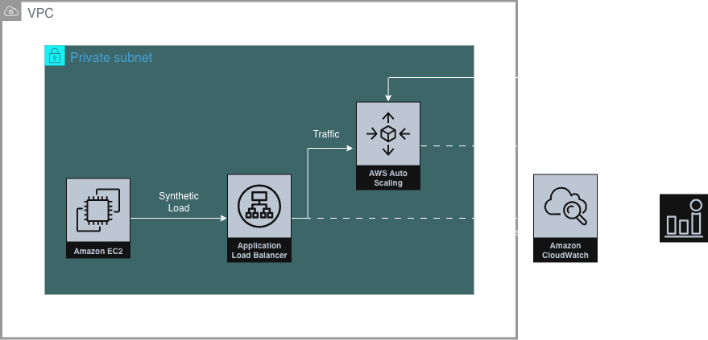
Validating Scaling Mechanics
- Provisioned a custom CloudWatch dashboard via Terraform to track the exact metrics driving the ASG.
- The Workflow:
- Trigger JMeter from the private runner.
- Watch the CPU usage and ALB RequestCount spike on the dashboard.
- Observe the CloudWatch Alarm status.
- Validate the ASG seamlessly step-scaling out to handle the load.
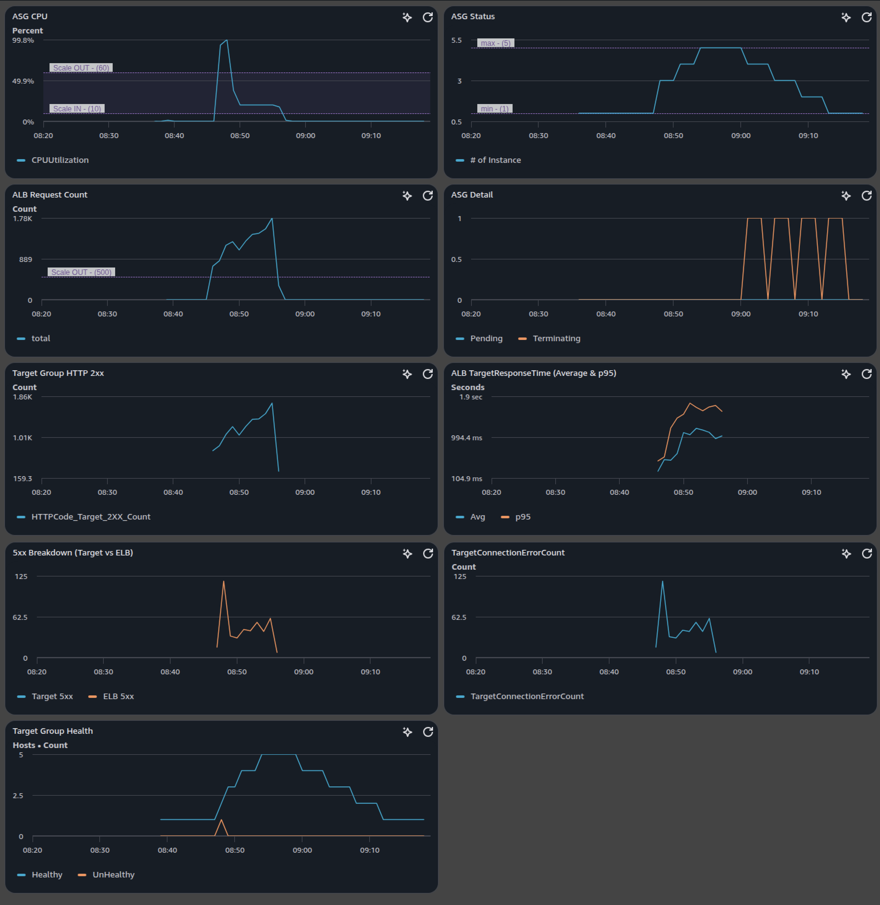